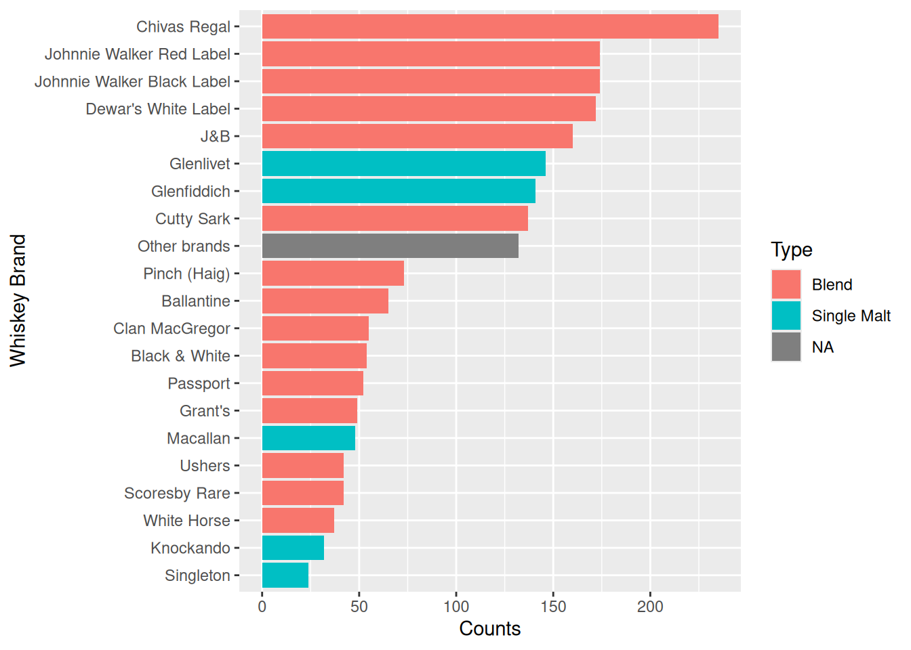
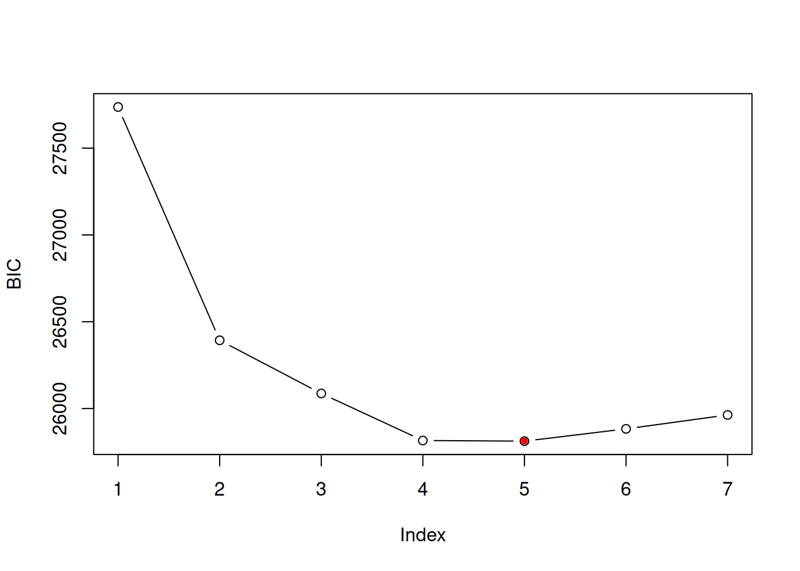
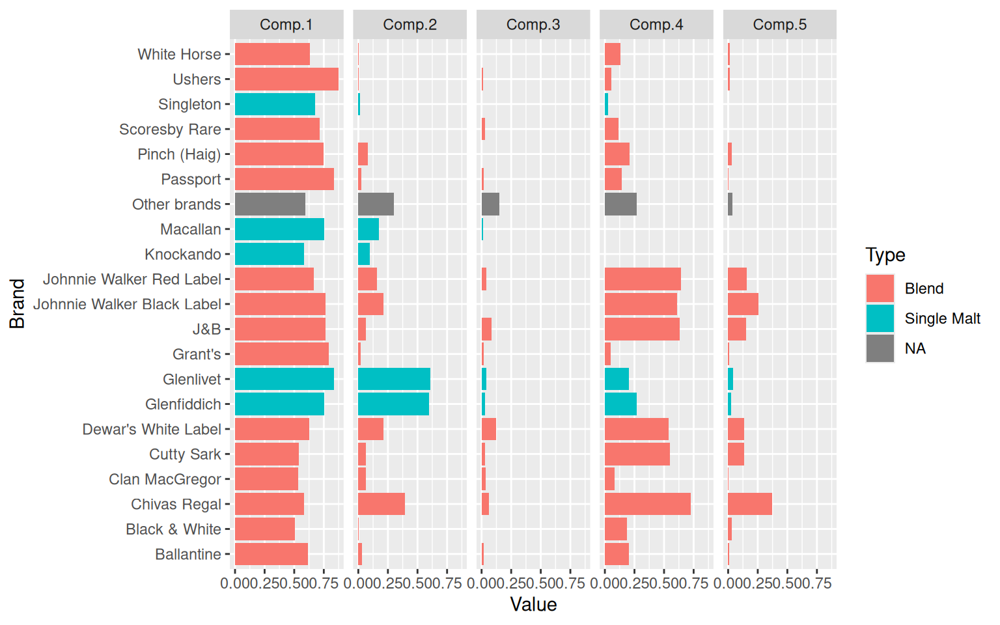
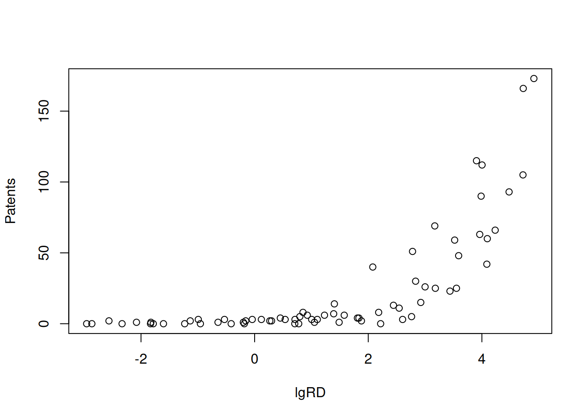
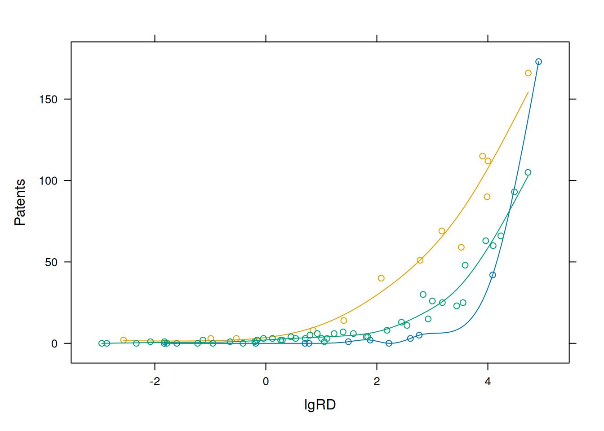
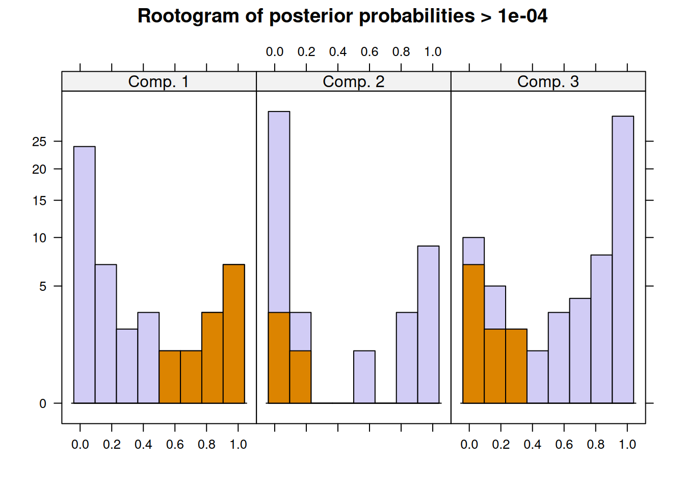
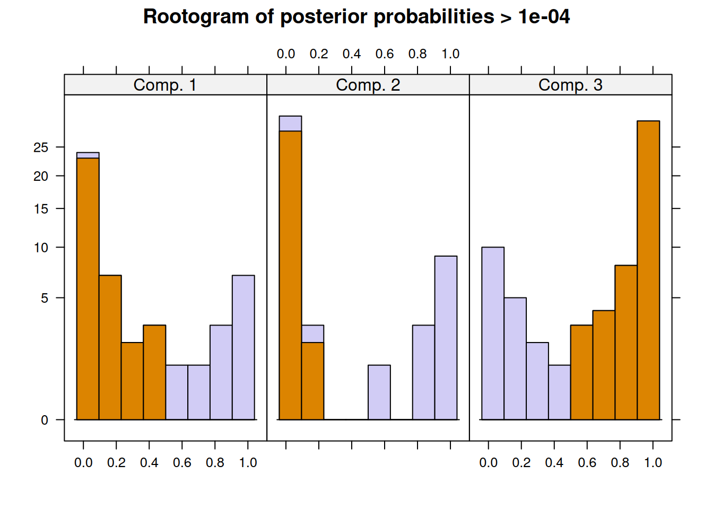
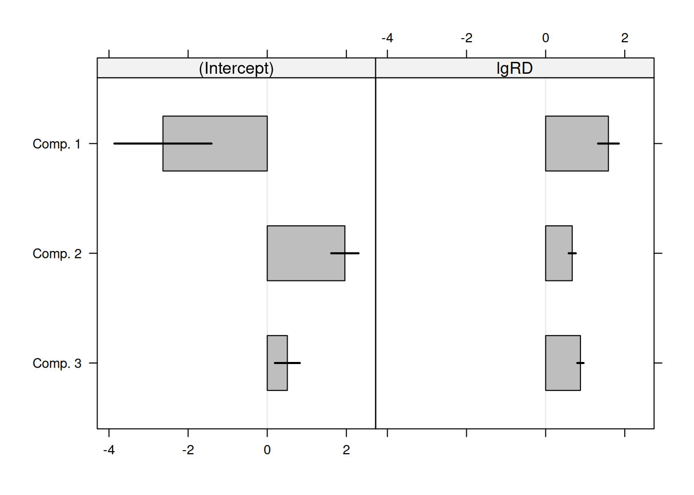

library(dplyr)
library(flexmix)
library(ggplot2)
library(tidyr)Finite Mixture Modeling using Flexmix
Flexmix
Mixture Modeling
Here, I replicate the codes written by Grun & Leish (2007) in ‘FlexMix: An R package for finite mixture modelling’, University of Wollongong, Australia. My intent here was to learn the {flexmix} package by replicating the results by the authors.
Model Based Clustering
The model based clustering on the whiskey dataset. The whiskey dataset is from the Simmons Study of Media and Markets (Fall 1997), and contains the incidence matrix for scotch brands in households who reported consuming scotch for period of 1 year. The dataset is taken from Edwards and Allenby (2003).
Load the necessary packges first: tidyverse and flexmix.
Quick EDA
Quick look at the data itself. The dataframe consists of 2 elements - frequency (numeric vector), and the incidence matrix. There are total of 484 observations.
data("whiskey")
df <- whiskey
set.seed(1802)
str(df)'data.frame': 484 obs. of 2 variables:
$ Freq : int 1 1 10 14 10 23 9 8 1 12 ...
$ Incidence: num [1:484, 1:21] 1 0 0 0 0 0 0 0 0 0 ...
..- attr(*, "dimnames")=List of 2
.. ..$ : chr [1:484] "1" "2" "3" "4" ...
.. ..$ : chr [1:21] "Singleton" "Knockando" "White Horse" "Scoresby Rare" ...The column names of the df$Incidence matrix are the brands of whiskey.
colnames(df$Incidence) [1] "Singleton" "Knockando"
[3] "White Horse" "Scoresby Rare"
[5] "Ushers" "Macallan"
[7] "Grant's" "Passport"
[9] "Black & White" "Clan MacGregor"
[11] "Ballantine" "Pinch (Haig)"
[13] "Other brands" "Cutty Sark"
[15] "Glenfiddich" "Glenlivet"
[17] "J&B" "Dewar's White Label"
[19] "Johnnie Walker Black Label" "Johnnie Walker Red Label"
[21] "Chivas Regal" The incidence matrix shows a relationship between two classes of variables - in this case: freqencies of the brand of whiskey in the past year, and the brand of whiskey itself. Quick look at a portion of the matrix:
df$Incidence[sample(x = 1:484,size = 10),sample(1:21,3)] Macallan Cutty Sark Black & White
119 0 1 0
8 0 0 0
245 0 0 1
347 0 0 0
26 0 1 0
221 1 0 0
1 0 0 0
178 1 0 0
411 0 0 0
224 0 1 0The popularity of the whiskeys can be seen here. Chivas Regal seems to be a favourite, which puts my personal preference in line with a larger population :)
c <- colSums(df$Incidence)
d1 <- data.frame(Brand=names(c),counts=c,row.names = NULL)
d1 <- d1 %>% left_join(whiskey_brands) %>% arrange(-counts)
ggplot(d1,aes(reorder(Brand,counts),counts,fill=Type))+geom_bar(stat='identity')+coord_flip()+labs(y='Counts',x='Whiskey Brand')
Model building
The first model in the paper is a stepped Flexmix model, specific for binary variables using the FLXMcvbinary() model. Since the objective is to cluster the model based on the Incidence counts and Frequencies, the formula used is Incidence ~ 1. The frequencies themselves are input as weights in the formula.
wh_mix <- stepFlexmix(Incidence ~ 1,
weights = ~ Freq,
data = df,
model = FLXMCmvbinary(truncated = TRUE),
control = list(minprior = 0.005),
k=1:7,
nrep=5)1 : * * * * *
2 : * * * * *
3 : * * * * *
4 : * * * * *
5 : * * * * *
6 : * * * * *
7 : * * * * *summary(wh_mix) Length Class Mode
1 stepFlexmix S4 A top model can be selecting using BIC or AIC criteria. The BIC criteria selects a model with 5 clusters.
plot(BIC(wh_mix),type='b',ylab='BIC')
points(x = which.min(BIC(wh_mix)),min(BIC(wh_mix)),col='red',pch=20)
wh_best <- getModel(wh_mix,'BIC')
print(wh_best)
Call:
stepFlexmix(Incidence ~ 1, weights = ~Freq, data = df, model = FLXMCmvbinary(truncated = TRUE),
control = list(minprior = 0.005), k = 5, nrep = 5)
Cluster sizes:
1 2 3 4 5
24 262 794 161 977
convergence after 127 iterationsThe proportions of the observations in each cluster are shown here:
round(prop.table(table(wh_best@cluster)),2)
1 2 3 4 5
0.04 0.25 0.19 0.23 0.29 The parameter estimates plotted for model with k=5 is shown below graphically. Component 3 (4% of households) contain the largest number of different brands. Component 1 (25% of households) seen to prefer single malt whiskeys. Component 4 (23% of households) are across the board with Brands, but perhaps show lesser of an interest in single malts, just like Component 5 (29% of the households).
# wh_best.prior <- prior(wh_best)
wh_best.param <- parameters(wh_best)
wh_best.param <- data.frame(Brand=stringr::str_replace(rownames(wh_best.param),pattern = 'center.',replacement = ''),
wh_best.param,row.names = NULL)
wh_best.param <- wh_best.param %>% gather(Components,Value,Comp.1:Comp.5)
wh_best.param <- wh_best.param %>% left_join(y = whiskey_brands,by = 'Brand')
ggplot(wh_best.param,aes(y=Value,x=Brand,fill=Type))+
geom_bar(stat='identity')+
coord_flip()+
facet_grid(.~Components)
Mixtures of Regressions
The next example in the paper is the patent data in Wang et al. (1998). The help file ?patent notes that the data consists of the number of patents, R&D spending and sales in millions of dollar for 70 pharmaceutical and biomedical companies in 1976, taken from the National Bureau of Economic Research R&D Masterfile.
Quick EDA
The dependant variable here is Patents. Independant variable is lgRD which is the log of R&D spending. The objective in this exercise is to try and find how many may clusters exist within this bi-variate dataset. When I started this exercise, it seemed quite moot to me, since visually, I couldn’t really tell any distict clusters. But, the results show otherwise.
data("patent")
df_patent <- tbl_df(patent)Warning: `tbl_df()` was deprecated in dplyr 1.0.0.
ℹ Please use `tibble::as_tibble()` instead.df_patent# A tibble: 70 × 4
Company Patents RDS lgRD
<chr> <int> <dbl> <dbl>
1 "ABBOTT LABORATORIES " 42 0.0549 4.09
2 "AFFILIATED HOSPITAL PRDS " 1 0.0032 -2.08
3 "ALBERTO-CULVER CO " 3 0.0078 0.119
4 "ALCON LABORATORIES " 2 0.0803 1.88
5 "ALLERGAN PHARMACEUTICALS INC " 3 0.0686 1.10
6 "ALZA CORP-CL A " 40 3.33 2.08
7 "AMERICAN HOME PRODUCTS CORP " 60 0.0243 4.10
8 "AMERICAN HOSPITAL SUPPLY " 30 0.0128 2.83
9 "AMERICAN STERILIZER CO " 7 0.0252 1.39
10 "AVON PRODUCTS " 3 0.0094 2.60
# ℹ 60 more rowsplot(Patents~lgRD,df_patent)
Model Building
The paper mentions that Wang et al. (1998) chose a finite mixture of three Poisson regression models to represent the data. The FLXMRglm() is used for the Poisson model with a concomitant variable modeled using FLXPmultinom().
pat_mix <- flexmix(Patents ~ lgRD, k = 3, data = df_patent, model = FLXMRglm(family = "poisson"), concomitant = FLXPmultinom(~RDS))
pat_mix
Call:
flexmix(formula = Patents ~ lgRD, data = df_patent, k = 3, model = FLXMRglm(family = "poisson"),
concomitant = FLXPmultinom(~RDS))
Cluster sizes:
1 2 3
12 13 45
convergence after 33 iterationsThe clusters obtained from the analysis are given by a cluster() function.
clusters(pat_mix) [1] 1 3 3 1 3 2 3 3 3 1 3 2 3 3 1 3 1 2 3 3 1 1 2 3 2 3 3 3 3 1 3 3 3 3 2 3 3 1
[39] 2 3 3 3 3 2 3 3 1 3 2 3 3 1 3 3 3 3 3 1 3 3 3 3 2 3 2 2 3 3 2 3Results
The data is replotted but with colors for the clusters and additional splines. As we can see, the model beautifully models three lines through three clusters in the data.
Components <- factor(clusters(pat_mix))
xyplot(Patents~lgRD,groups = Components,df_patent,type=c('p','spline'))
Further investigation
The flexmix package has a function to plot rootograms of the posterior probabilities of observations. Observations where the a-posteriori probability is large for component #1 and #3 are indicated. As we can see where component #1 has highest probabilities indicated in the 1st bucket, they are lowest in #2 and #3 buckets.
plot(pat_mix,mark=1)
plot(pat_mix,mark=3)
A summary of the mixture model results show the estimated priors, number of observations within each cluster (size), number of observations with p>10^-4 (post>0), and a ratio of the two. The rations of 0.58, 0.42 and 0.18 indicate big overlaps of the clusters. This can also be observed by the large portion of values in the mid-section of the rootogram above.
summary(pat_mix)
Call:
flexmix(formula = Patents ~ lgRD, data = df_patent, k = 3, model = FLXMRglm(family = "poisson"),
concomitant = FLXPmultinom(~RDS))
prior size post>0 ratio
Comp.1 0.201 12 48 0.250
Comp.2 0.184 13 47 0.277
Comp.3 0.615 45 63 0.714
'log Lik.' -197.6752 (df=10)
AIC: 415.3505 BIC: 437.8354 Tests of significance of the coefficients are obtained by the refit(). In each cluster the intercept and lgRD are both statistically significant at the 0.05 level. The black bars in the plot are 95% CI over the point estimates.
rm <- refit(pat_mix)
summary(rm)$Comp.1
Estimate Std. Error z value Pr(>|z|)
(Intercept) -2.63638 0.62672 -4.2067 2.592e-05 ***
lgRD 1.58644 0.13393 11.8454 < 2.2e-16 ***
---
Signif. codes: 0 '***' 0.001 '**' 0.01 '*' 0.05 '.' 0.1 ' ' 1
$Comp.2
Estimate Std. Error z value Pr(>|z|)
(Intercept) 1.962173 0.176485 11.118 < 2.2e-16 ***
lgRD 0.671908 0.045639 14.722 < 2.2e-16 ***
---
Signif. codes: 0 '***' 0.001 '**' 0.01 '*' 0.05 '.' 0.1 ' ' 1
$Comp.3
Estimate Std. Error z value Pr(>|z|)
(Intercept) 0.508194 0.160927 3.1579 0.001589 **
lgRD 0.879702 0.040249 21.8564 < 2.2e-16 ***
---
Signif. codes: 0 '***' 0.001 '**' 0.01 '*' 0.05 '.' 0.1 ' ' 1plot(rm,bycluster=F)
The authors note that “estimates vary between all components even though the co- efficients for lgRD are similar for the first and third component”.
Notes
- For both the models, although I’m using the exact datasets and seed values, I observe different values for proportions in each cluster (for model #1) as well as P values for significance etc (for model #2). This could be due to some changes in the underlying flexmix codes since 2007.
References
- http://ro.uow.edu.au/cgi/viewcontent.cgi?article=3410&context=commpapers
- http://citeseerx.ist.psu.edu/viewdoc/download?doi=10.1.1.491.3320&rep=rep1&type=pdf
- https://cran.r-project.org/web/packages/flexmix/index.html
- https://cran.r-project.org/web/packages/flexmix/vignettes/mixture-regressions.pdf
- https://cran.r-project.org/web/packages/flexmix/vignettes/flexmix-intro.pdf
- https://cran.r-project.org/web/packages/flexmix/vignettes/bootstrapping.pdf
- https://www.researchgate.net/profile/Greg_Allenby/…/…e334.pdf